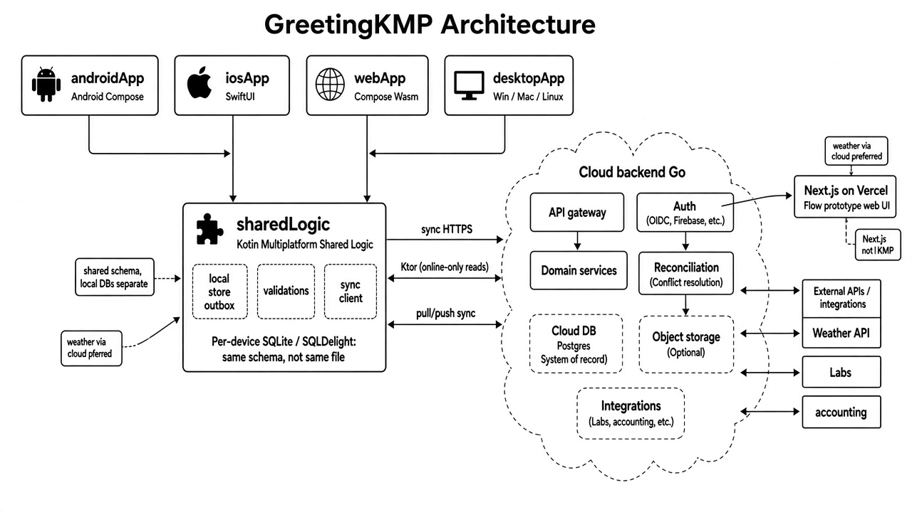
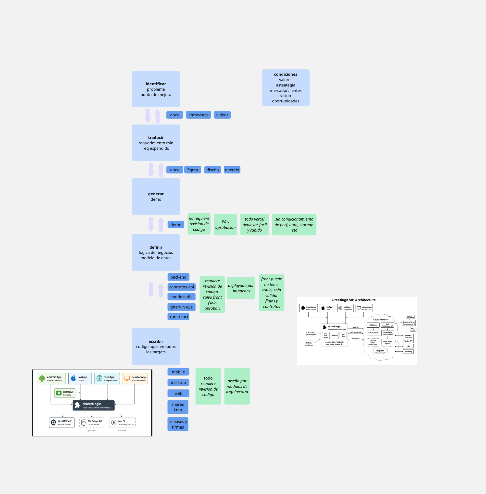

GreetingKMP
Del campo a la nube, en cuatro pantallas.
La misma nota se puede cargar en un teléfono Android, un iPhone, el navegador o la computadora. Si no hay internet, queda en el aparato. Cuando vuelve la red, viaja a la nube.
Las cuatro pantallas
Cada aparato tiene su cara. La lógica es una sola.
Lo que la persona ve cambia. Lo que decide guardar, marcar pendiente y enviar es el mismo bloque del medio.
Teléfono AndroidLa pantalla del celular
iPhoneLa pantalla del iPhone
NavegadorLa pantalla en la web
ComputadoraWindows, Mac o Linux
Lógica compartida
Una sola pieza atiende a las cuatro pantallas.
Guardar la nota en el aparato
Saber si está pendiente o ya se envió
Mandarla a la nube cuando hay red
Dónde vive cada cosa
El aparato trabaja solo. La nube guarda el registro.
En el aparato
PantallaAndroid, iPhone, navegador o computadora
Notas de este aparatoLo que la persona acaba de cargar
Bandeja de salidaLo que todavía no llegó a la nube
EnvíoSale recién cuando hay conexión
→sincronizar←
En la nube
Puerta de entradaRecibe y devuelve notas
Registro comúnLo que ya confirmaron los aparatos
AcuerdoApp y nube hablan el mismo idioma
Mapa completo
Aparatos, lógica compartida y nube.

Sin internet
La nota queda en el aparato y no entra a la nube.
Persona
Pantalla
Aparato
Nube
Carga «revisé el barril»
La guarda como pendiente
No llega
La persona ve la nota en su lista, marcada pendiente. Quien mire la nube, no la encuentra.
Con internet
Al sincronizar, la nota queda en los dos lados.
Persona
Pantalla
Aparato
Nube
Marca que hay red y pide sincronizar
Manda las notas pendientes
La nube confirma que las recibió
La pantalla las muestra como enviadas
A partir de ahí, la nota está en el aparato y también en el registro de la nube.
El acuerdo
La app y la nube leen el mismo papel.
Las cuatro apps
Arman el pedidoQué notas van, con qué texto y en qué estado
Leen la respuestaCuántas se aceptaron
↔el mismo acuerdo
La nube
Recibe ese pedidoY guarda las notas
Contesta con la misma formaAsí la app sabe qué pasó
Hay un ejemplo fijo de pedido y de respuesta. Los dos lados se prueban contra ese ejemplo. Si el acuerdo cambia, cambia para los dos.
Antes de mirar las pantallas
Una revisión automática del trabajo.
Corre sola y deja un informe en un archivo. No hace falta abrir ninguna app.
El relato, escrito
Las dos escenas que recorren las cuatro pantallas.
Feature: Offline field notes sync
As a cellar operator
I capture notes while offline and sync them when connectivity returns.
Every client app (web, android, ios, desktop) runs this same feature
through its own Behave driver.
Background:
Given the cloud backend is reachable
Scenario: Add note while offline stays pending on device Given the app is offline When I add a note "Checked barrel B12" Then I should see a pending note "Checked barrel B12" And the cloud should not contain "Checked barrel B12"
Scenario: Sync pushes pending notes to the cloud Given the app is offline And I add a note "Checked barrel B12" When I go online And I sync notes Then I should see a synced note "Checked barrel B12" And the cloud should contain "Checked barrel B12"
La misma historia
Un relato, contado en las cuatro pantallas.
1. Sin red
2. Cargar la nota
3. Sigue pendiente
4. Hay red y se envía
5. Está en la nube
- Abre la app
- Hace los cinco pasos
- Mira la nube
- Abre la app
- Hace los cinco pasos
- Mira la nube
- Abre la app
- Hace los cinco pasos
- Mira la nube
- Abre la app
- Hace los cinco pasos
- Mira la nube
El relato no se copia cuatro veces. Es uno solo. Cambia quién maneja cada pantalla.
Quién recorre la pantalla
Cada aparato se prueba de la forma que le corresponde.
- Se abre como lo haría una persona
- Escribe, marca y sincroniza
- Busca cada botón por su nombre
- Lo toca en el centro de ese botón
- Usa el simulador
- Busca el interruptor y los botones
- Le pide cada paso a la app
- La ventana no muestra el mouse
De principio a fin
Qué pasa cuando se pide una prueba.
Quien la pide
Preparación
La historia
Cierre
Elige la pantalla: web, Android, iPhone o computadora
Si la nube está apagada, la enciende y abre lo que haga falta
Vacía notas viejas, recorre los pasos y anota el resultado
Deja los informes. En Android, apaga el teléfono virtual
Mirar o no mirar
La misma prueba, con la pantalla oculta o a la vista.
Sin mostrar la pantalla
Es el modo de todos los días y el de una máquina de integración. El navegador no se abre, el teléfono virtual no tiene ventana y el iPhone no muestra el simulador.
Mostrando la pantalla
Sirve cuando una persona quiere ver qué está pasando. Se abre el navegador, la ventana de la computadora, el teléfono Android o la ventana del iPhone.
En la computadora, aunque la ventana esté visible, los pasos no se dibujan con el mouse: la prueba se los pide directo a la app.
Las máquinas
Cada tipo de equipo hace su parte.
Linux
- La revisión automática
- La prueba de la nube
- Navegador y computadora
- Android, si tiene un teléfono virtual
Mac
- Todo lo de Linux
- Y el iPhone, porque el simulador vive en Mac
Windows
- Navegador
- La app de computadora
Elegir qué corre en cada máquina es el trabajo del futuro tablero de integración. Los pasos ya están definidos.
Lo que queda escrito
Al terminar, hay papeles para leer.
Esos papeles los puede leer una persona o, más adelante, el tablero que junta los resultados de Linux, Mac y Windows.
Cómo se llega a las apps
Primero se muestra. Después se construye.
Armar las apps de entrada es lento para probar, publicar y mostrar. El camino va de lo que se puede mirar hoy a las apps del final.
Producto define el pedido
Sale el documento, el diseño en Figma y el relato Gherkin.
documentofigmagherkin
Demo web, publicada al instante
Una web de prueba en Next.js, en Vercel. Se mira en celular, tablet y computadora, y ahí se afina el pedido. Todavía no hace falta resolver el acceso, el guardado ni la velocidad.
sin revisión de códigose publica fácilse pule el requerimiento
La web de verdad
Ahí se cierran el acuerdo con el servidor y el modelo de datos. Este código se revisa antes de unirlo.
contratosmodelo de datosse revisa antes de unir
Las apps finales
Siguiendo el mapa de arquitectura: el código de las cuatro pantallas y las pruebas de punta a punta.
androidiphonewebcomputadorapruebas e2e
El tablero
Del pedido a las apps.
